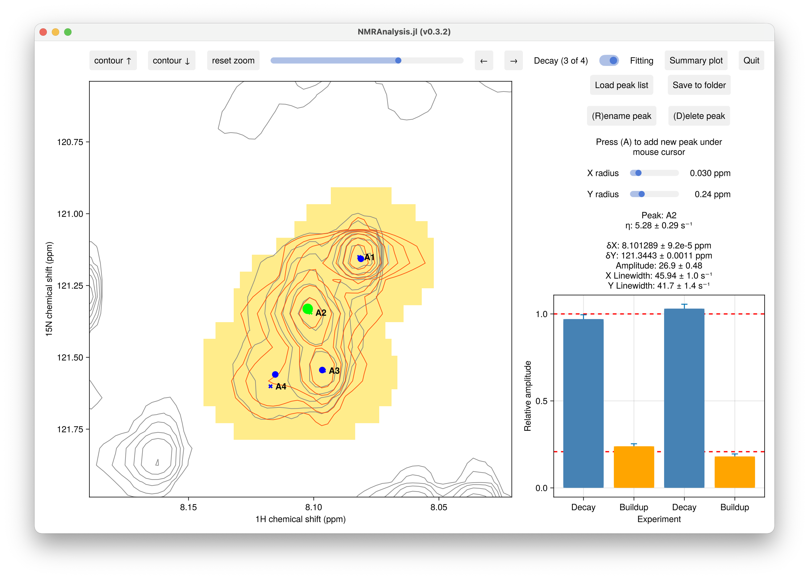
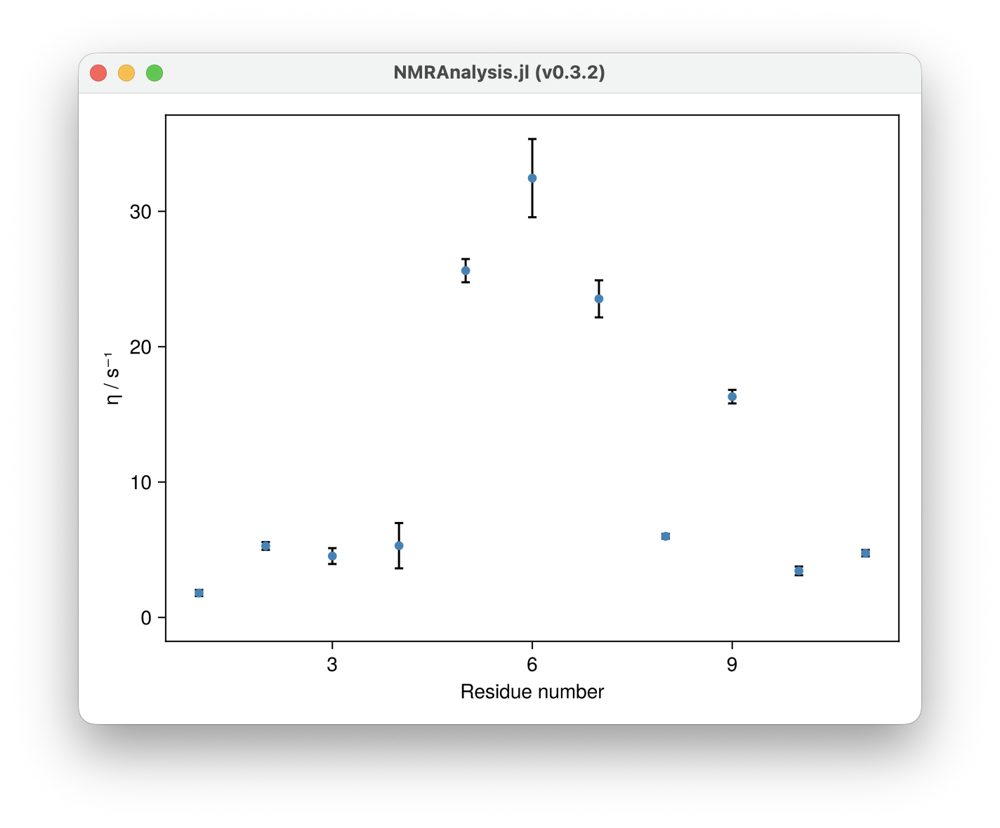

Cross-Correlated Relaxation (CCR)
Cross-correlated relaxation (CCR) experiments measure the interference between two relaxation mechanisms — for example, between dipole-dipole coupling and chemical shift anisotropy — and are used to determine bond vector orientations, order parameters, and rotational correlation times.
The CCR rate η is extracted by comparing the buildup and decay of spin-state-selective coherences:
\[\tanh(\eta T) = \frac{I_\text{buildup}}{I_\text{decay}}\]
For symmetric reconversion experiments, where two buildup and two decay spectra are recorded to suppress contributions from auto-relaxation:
\[\tanh(\eta T) = \sqrt{\frac{I_{\text{bu},1} \cdot I_{\text{bu},2}}{I_{\text{dec},1} \cdot I_{\text{dec},2}}}\]

Usage
Single decay / buildup pair
using NMRAnalysis
ccr2d("decay/pdata/1", "buildup/pdata/1", 0.08)Symmetric reconversion (two pairs)
ccr2d(
["decay1/pdata/1", "decay2/pdata/1"],
["buildup1/pdata/1", "buildup2/pdata/1"],
0.08
)The third argument T is the relaxation time constant in seconds during which the CCR rate acts.
Output
Clicking Save to folder writes all results to results.csv. The derived columns are:
| Column | Description |
|---|---|
eta, eta_err | Fitted CCR rate η (s⁻¹) and uncertainty |
amp, amp_err | Reference amplitude and uncertainty |
See Peak Lists and Output Files for the full format. Plot η against residue number with summaryplot("output-folder/").
